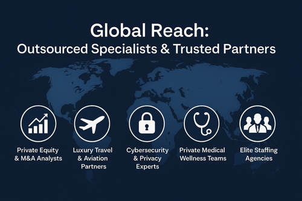

Wealth & Financial Management
- Investment strategy & portfolio management
- Tax planning & optimization
- Estate & trust management
- Philanthropy & charitable giving strategy
- Risk management & insurance solutions
Offered Services
AC Operations combines strategic advisory, elite concierge management, privacy protection, and specialized partner coordination.
Partner network
AC Operations works with vetted providers across finance, aviation, security, wellness, staffing, and luxury lifestyle management.
